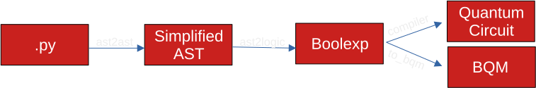

How it works
To convert Python code into a quantum circuit, qlasskit implements a series of transformations:
It begins with the Python AST (Abstract Syntax Tree), converting it into a more streamlined form using the
ast2astmodule.Next, the streamlined AST is translated into boolean expressions as an intermediate step by the
ast2logicmodule. During this phase, boolean expressions are refined and optimized in preparation for the final transformation.Finally, the
compilermodule takes these optimized boolean expressions and compiles them into a quantum circuit.
Unlike other libraries that translate individual operations into quantum circuits before combining them, qlasskit constructs a single boolean expression for each output qubit of the entire function. This unique approach facilitates advanced optimization leveraging boolean algebraic properties.

For instance, let assume we have the following function:
from qlasskit import qlassf, Qint
from qiskit import QuantumCircuit
@qlassf
def f_comp(b: bool, n: Qint[2]) -> Qint[2]:
for i in range(3):
n += 1 if b else 2
return n
If we decompose the algorithm in 3 separate additions and we compile them separately, we obtain the following circuit:
@qlassf
def f1(b: bool, n: Qint[2]) -> Qint[2]:
return n + (1 if b else 2)
qc = QuantumCircuit(f_comp.num_qubits * 2 - 1)
for i in range(3):
qc.barrier(label=f"it_{i}")
qc.append(f1.gate(), [0] + list(range(1 + i * 2, 5 + i * 2)))
print("Operations:", qc.decompose().count_ops())
qc.decompose().draw("mpl")
Operations: OrderedDict([('cx', 12), ('barrier', 3), ('x', 3), ('ccx', 3)])
While if we compile the whole function to a quantum circuit using qlasskit, we obtain the following quantum circuit:
qc = QuantumCircuit(f_comp.num_qubits)
qc.append(f_comp.gate(), f_comp.qubits)
print("Operations:", qc.decompose().count_ops())
qc.decompose().draw("mpl")
Operations: OrderedDict([('cx', 4), ('x', 1), ('ccx', 1)])
As we can see from the circuit drawings, qlasskit approach needs half the number of qubits and half the number of gates.
AST Translator
Given a python function, the qlasskit.ast2logic module walks its syntax tree translating all the statements /
expressions to boolean expressions.
For instance, the following function:
@qlassf
def f(n: Qint[4]) -> bool:
return n == 3
Is translated to this boolean expression:
print(f.expressions)
[(_ret, n.0 & n.1 & ~n.2 & ~n.3)]
Compiler
The boolean expressions are then being fed to the `qlasskit.compiler`` which compiles boolean expressions to invertible circuits, introducing auxiliary qubits. In this step, the compiler will automatically uncompute auxiliary qubits in order to reduce the number of qubits needed and the circuit footprint.
For the compilation, two backends are supported:
InternalCompiler
Tweedledum.xag_synth
Result
The result of the compiler is a quantum circuit represented with qlasskit QCircuit. This circuit
can now be exported to one of the supported framework as a gate or as a standalone circuit.
The previous example function f, is translated to the following quantum circuit: the
result is available at qubit q6.
f.export().draw("mpl")